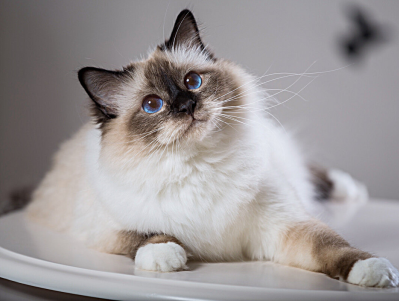

Собаки - это четвероногие животные, родственники диких волков. Много-много лет назад человек приручил собаку, чтобы та защищала его, охраняла дом, скот... Современные люди тоже заводят собак, но не только как охранника и помощника, но и просто как друга
Практическая работа №15
Собаки


Кошки




Кошка — домашнее животное, одно из наиболее популярных (наряду с собаками) «животных-компаньонов» или домашних животных.
Кошки — млекопитающие и плотоядные животные. За способность уничтожать грызунов люди ценят кошек около 10 000 тысяч лет. Являясь одиночным охотником на грызунов и других мелких животных, кошка — социальное животное, использующее для общения широкий диапазон звуковых сигналов, а также феромоны и движения тела.